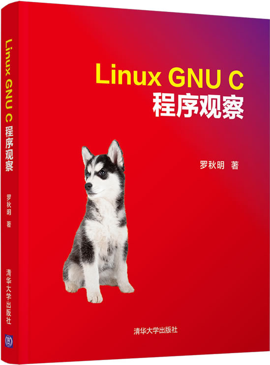

首页 > 书籍下载
《Linux GNU C程序观察》PDF下载（高清完整版）
|  | 作者：罗秋明 |
| 出版时间：2020年05月01日 | |
| 出版社：清华大学出版社 | |
| 书号ISBN：9787302545491 | |
| 总页数：427 | |
| 总字数：57.5W |
这是一本讲解 C 语言进阶知识的书籍，内容涵盖 Linux 基础、GCC、GDB、Makefile 等，适合有 C 语言基础、想深入学习 C 语言的读者。
这里提供的是《Linux GNU C程序观察》的高清 PDF 下载，内容完整，附带目录标签。
想成为一名合格的 C 程序员，学会 C 语言的基础语法只是第一步，还要继续学习这本书中罗列的技术，比如 GCC、GDB、Makefile 等，它们同样是 C 程序员必须掌握的。认真读完这本书，你就能从一个 C 语言菜鸟变成 C 语言高手。
一位购买了这本书的读者，阅读完后给出的评价是：
非常实用的一本书，解决了很久的困惑，介绍这些知识的书不多，作者写的很用心。
书籍目录
- 第1章 实验环境构建 1
- 1.1 安装Linux 1
- 1.2 虚拟机安装Linux 9
- 1.3 ssh远程终端访问 20
- 1.4 初次接触Linux 28
- 1.5 小结 37
- 第2章 程序编译与运行 38
- 2.1 编译的各阶段 39
- 2.2 GCC基本用法 51
- 2.3 GDB调试 70
- 2.4 小结 84
- 练习 84
- 第3章 数据、运算与控制 86
- 3.1 x8664 ISA 86
- 3.2 数据 92
- 3.3 运算 102
- 3.4 控制 107
- 3.5 小结 159
- 练习 159
- 第4章 链接与可执行文件 161
- 4.1 生成可执行文件 161
- 4.2 可重定位目标文件 182
- 4.3 静态链接 200
- 4.4 动态链接 214
- 4.5 小结 250
- 练习 251
- 第5章 链接脚本与makefile 252
- 5.1 二进制工具和链接脚本 252
- 5.2 makefile 267
- 5.3 小结 282
- 练习 283
- 第6章 程序运行 284
- 6.1 装入与运行 284
- 6.2 基本行为观察 289
- 6.3 异常行为 304
- 6.4 小结 325
- 练习 326
- 第7章 性能剖析 327
- 7.1 打桩方法 327
- 7.2 gprof 334
- 7.3 gcov 349
- 7.4 其他分析工具 355
- 7.5 小结 375
- 练习 376
- 第8章 综合实例: HDFS中实现zlib库的旁路 377
- 8.1 项目需求 377
- 8.2 系统分析 378
- 8.3 编码实现 387
- 8.4 功能验证 398
- 8.5 小结 401
书籍下载
一键登录，免费下载完整版 PDF，文件名称：《Linux GNU C程序观察》.pdf